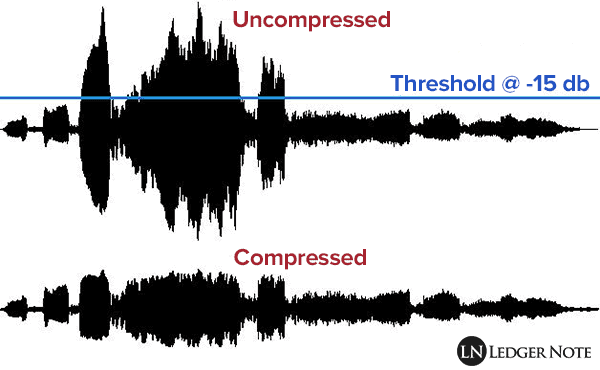

Compressie
Wat is compressie?
Compressie is het verminderen van de hoeveelheid data die nodig is om informatie te verzenden of om op te slaan.
Compressie maakt hetzelfde bericht kleiner, maar de hoeveelheid informatie blijft hetzelfde.
Wanneer je een groot bestand download met een databundel, is de databundel snel op.
Om dit op te lossen bestaat er zoiets als bestandscompressie, dit is compressie waarbij de bestandsgroote word verkleind.
Bestanden kunnen hierdoor ook sneller gedownload worden.
Twee soorten bestandscompressie:
-Lossy compression
-Lossless compression
Lossy compression

Wat is dit?
Bij lossy compression wordt er gesproken over het aanpassen en verwijderen van informatie.
Bijvoorbeeld: een foto heeft 25 wittinten, sommige tinten verschillen zo weinig, dat je het bijna niet kan zien.
Als je deze weghaalt heeft het invloed op de kwaliteit van de foto, maar het bestand wordt wel kleiner.
Doe je dit met 1 of 2 tinten, merk je bijna geen verschil in kwaliteit, maar als je dit vaker doet ga je dat wel merken.
Veelgebruikt:
JPEG wordt vaak gebruikt als lossy compression, afgekort JPG.
Foto's die je maakt met een telefoon, worden opgeslagen als .jpg.
Je telefoon past de lossy compression automatisch toe.
Lossles compression
Wat is dit?
Bij lossles compression wordt in tegenstelling tot lossy compression de kwaliteit niet beïnvloed.
De informatie wordt ook niet verwijderd, maar het wordt op een beter manier opgeslagen.
Hier werkt het zo: hebben pixels dezelfde waarde, dan worden ze opgeslagen als 1 soort pixel.
Verschillen: lossy/lossles
-Lossles bestand kan worden omgezet naar het origineel.
-Bij een lossy bestand kan dat niet.
-Lossy heeft kleinere bestandenf
Compressie geluidsfragmenten

Wat is dit?
Dit is hetzelfde als bestandscompressie, maar dan met geluidsfragmenten.
Een van de compressietechnieken voor muziek is MP3, dit is Lossy compression.
Dat houdt in dat er informatie verloren gaat.
Mensen kunnen horen tot 20 kHz.
Met de MP3 techniek worden alle klanken hoger dan 16 kHz weggelaten.
Dit zorgt ervoor dat muziek minder opslagruimte kost.